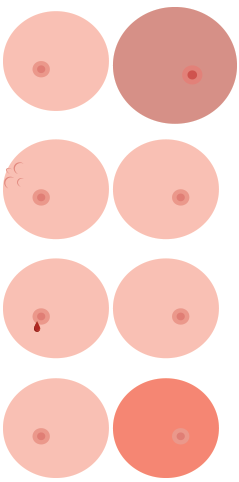

Om bröstcancer
Bröstcancer drabbar framför allt medelålders och äldre kvinnor. Medianåldern för insjuknande är 64 år. Färre än fem procent är under 40 år.
Totalt ställs omkring 55 000 cancerdiagnoser varje år i Sverige. Av dessa är mer än 7 000 bröstcancerdiagnoser. Omkring en fjärdedel av all cancer hos kvinnor är bröstcancer, som därmed är kvinnans vanligaste cancersjukdom. Mellan 15 och 20 kvinnor insjuknar varje dag.
Män kan också få bröstcancer även om det är ovanligt. Cirka 40-tal män i Sverige får varje år denna diagnos. Behandling och prognos är desamma som vid bröstcancer hos kvinnor
Symtom
 Knöl i bröstet är det vanligaste symtomet. Andra symtom kan vara:
- Knöl i armhålan
- Förstorat och hårt bröst
- Hudrodnad och "apelsinhud"
- Indragningar i huden
- Blod eller vätska från bröstvårtan.
Smärta och ömhet i brösten är inte vanliga symtom vid bröstcancer utan har oftast helt normala hormonella orsaker.
Undersökning
För att läkaren säkert ska kunna ställa diagnos brukar man kombinera tre olika metoder: klinisk undersökning, mammografi/ultraljud och undersökning av celler från tumören (cytologi). I enstaka fall kan undersökning med magnetkamera bli aktuell.
Klinisk undersökning innebär bland annat att läkaren noggrant inspekterar och känner igenom brösten och lymfkörtlarna i armhålan och på halsen.
Mammografiundersökning (bröströntgen) och ibland även ultraljud görs. På röntgenbilden kan man med ganska stor säkerhet skilja ofarliga, godartade tumörer från elakartade cancertumörer. Man kan även upptäcka tumörer som är så små att de ännu inte kan kännas.
Undersökning av celler från tumören (cytologi) innebär att läkaren gör en finnålspunktion med en särskild spruta och suger ut celler från den misstänkta tumören. Cellerna undersöks sedan i mikroskop och på så sätt kan man avgöra om det rör sig om en godartad eller elakartad förändring. Ibland räcker det inte att suga ut celler från tumören utan man måste ta ett större prov, en så kallad mellan- eller grovnålsbiopsi. I enstaka fall kan man bli tvungen att göra en mindre operation för att få en säker diagnos.
- Stadium 0 eller cancer in situ (cancer på platsen) innebär att cancern endast växer i de cellager där den uppstått. Det är en mycket tidig cancerform som kan betraktas som ett förstadium till bröstcancer.
- Stadium I innebär att tumören är mindre än två centimeter i diameter när den upptäcks och att cancern inte spridit sig till lymfkörtlarna.
- Stadium II är tumören två till fem centimeter och även lymfkörtlarna kan vara angripna.
- Stadium III avser tumörer som är större än fem centimeter eller om mer omfattande spridning lymfkörtlar i armhålan finns.
- Stadium IV innebär att cancern spridit sig och bildat dottertumörer, metastaser.
Behandling
Bröstcancer behandlas främst med kirurgi (operation). Andra vanliga behandlingar är strålbehandling, hormonell behandling och cytostatikabehadnling som ges för att minska risken att sjukdomen kommer tillbaka. För en speciell typ av bröstcancer, HER2-positiv, är behandling med trastuzumab oftast aktuell.
Kirugi
En vanlig operation i dag innebär att enbart den del av bröstet som innehåller tumören med omgivande vävnad opereras bort, så kallad bröstbevarande kirurgi och att den så kallade portvaktskörteln (sentinel node) identifieras. Portvaktskörteln analyseras under pågående operation och om det inte finns tumörceller i den avstår man från att ta ut fler körtlar.
Om det finns tumörceller i portvaktskörteln så avlägsnas ytterligare ett tiotal av de lymfkörtlar som finns i armhålan. Detta gör man för att kunna bedöma sjukdomens stadium och kunna erbjuda den mest optimala behandlingen. I många fall behöver inte hela bröstet avlägsnas. Vid större tumörer, flera olika tumörer i bröstet, eller om kvinnan själv så önskar, tas dock hela bröstet bort.
Om en del av bröstet tas bort bör bröstet strålbehandlas efter operation. Syftet är att oskadliggöra de små cancerförändringar eller förstadier till cancer som kan finnas i den del av bröstet som lämnats kvar.
Hur länge du stannar på sjukhuset efter operationen kan variera från ett till ett par dygn. Ibland kan det vara nödvändigt att stanna ytterligare ett par dagar.
Det vanligaste är att man ett par veckor efter operationen får komma på återbesök till kirurgen. Besked om resultatet från den mikroskopiska analysen som gjorts av tumören kan dock dröja ytterligare några veckor. Analysen visar om tumören är borttagen med god marginal, typ av bröstcancertumör, om det finns tumörceller i borttagna lymfkörtlar, hur snabbt tumörcellerna delar sig, hormonkänslighet, HER2-status (positiv eller negativ) och malignitetsgrad.
Hur länge du blir sjukskriven beror på hur du mår, vilken typ av arbete du har och andra faktorer som kan ha betydelse för arbetsförmågan.
Komplikationer efter operation
Ibland kan det någon vecka efter operationen bildas vätska, serom, under såret. Det visar sig som en svullnad i armhålan eller på bröstkorgsväggen och beror oftast på att det läcker lymfvätska från lymfkärl som delats i samband med operationen. För att få bort svullnaden kan det bli nödvändigt att punktera den med en nål och suga ut vätskan. Ingreppet är så gott som smärtfritt, men kan behöva upprepas flera gånger.
Om lymfkörtlar i armhålan opererats bort, kan du till en början få svårt att röra armen i axelleden. För att inte axeln ska stelna till, är det viktigt att du tränar rörligheten. Din sjukgymnast ger tips om lämpliga rörelser.
På den sidan där lymfkörtlarna i armhålan tagits bort har du en ökad risk för infektion. Blodprov eller vaccinationer bör därför i första hand tas på den icke-opererade sidans arm. Du bör även försöka undvika skador och sår på handen eller armen på operationssidan.
Om du får symtom på infektion i handen, armen eller bröstet ska du genast kontakta sjukvården. Symtomen kan vara rodnad, värmeökning, svullnad och ibland hög feber. Infektionen kallas för rosfeber och behandlas med antibiotika.
Strålbehandling
Syftet med strålbehandlingen är att minska risken för en ny tumör i bröstet. Strålbehandlingen är ett komplement till operationen och ska döda de cancerceller som kan finnas kvar i eller kring operationsområdet. I vissa fall behövs ingen strålbehandling alls. Ibland bestrålas bara själva operationsområdet och i andra fall även de lymfkörtlar som finns i armhålan, kring nyckelbenet och utefter bröstbenet. Den vanligaste typen av strålbehandling är dock den som ges mot bröstet efter bröstbevarande kirurgi.
Strålbehandlingen ska påbörjas först när operationssåret har läkt. När även cytostatikabehandling ska ges påbörjas strålbehandlingen vanligen efter avslutad cytostatikabehandling.
Ibland kan huden bli röd och irriterad av strålbehandlingen. Du bör i framtiden vara försiktig med att sola det hudområde som blivit strålbehandlat eftersom huden kan vara mycket känslig och lätt blir bränd.
Hormonell behandling
Mellan 70 och 80 procent av alla bröstcancertumörer är hormonkänsliga och således beroende av kvinnliga könshormoner, framför allt östrogen, för att växa. I analysen som görs av tumören efter operation framgår om tumörcellerna är beroende av östrogen eller inte.
Om tumören är hormonberoende kan antihormoner, läkemedel som blockerar östrogenets effekt eller minskar östrogennivån, ges för att minska risken för återfall. Biverkningarna av sådana läkemedel brukar vara lindriga. Kvinnor under cirka 60 år brukar få ökade klimakteriebesvär med blodvallningar och sköra slemhinnor i underlivet.
Flera pågående studier har visat att aromatashämmare, medel som sänker östrogennivåerna hos kvinnor i klimakteriet, gör stor nytta som förebyggande behandling. Dessa aromatashämmare rekommenderas i vissa fall i stället för de som blockerar östrogenets effekt. Aromatashämmare kan dock endast användas av kvinnor som är i ett permanent klimakterium.
För de yngre kvinnorna som fortfarande menstruerar kan i vissa fall hämning av östrogenproduktionen i äggstockarna göras med GHRH analog. Tamoxifen är förstahandsval till de yngre kvinnorna med hormonkänslig tumör.
Cytostatika
Cytostatika, cellhämmande läkemedel, används mot vissa former av bröstcancer, både för att förebygga återfall (recidiv) av sjukdomen och för att behandla sjukdom som spridit sig i kroppen. I vissa fall är tumören i bröstet så stor eller växer på ett sådant sätt att den inte genast går att operera bort. Cytostatikabehandling kan då krympa tumören så mycket att den går att operera.
Cytostatikabehandlingen pågår vanligen i fem månader efter operation. Den vanligaste typen av behandling kallas FEC. Nyare mediciner av typen taxaner ingår ofta i kombination med FEC.
Monoklonala antikroppar
Trastuzumab är en monoklonal antikropp, ges nästan alltid till kvinnor som är opererade för en tumör som är HER2 positiv. I vissa fall ges det samtidigt med cytostatika (docetaxel) men oftast ges trastuzumab efter avslutad behandling med FEC kurer. Trastuzumabbehandling pågår i de flesta fallen under ett år.
Orsak
Vad som orsakar bröstcancer är inte klarlagt. Sannolikt uppstår sjukdomen genom ett komplicerat samspel mellan en mängd olika riskfaktorer såsom arvsanlag, hormonbalans och yttre miljöfaktorer. Vissa faktorer ökar alltså risken men kan inte ensamma orsaka sjukdomen.
- Hormonella faktorer
- P-piller och hormonbehandling
- Livsstil
- Ärftlighet
"Information tagen från bröstcancerfonden"